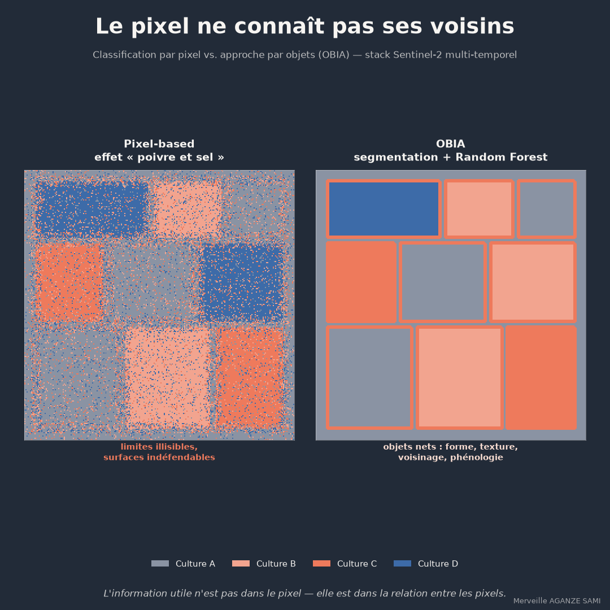

La classification d'une image satellitaire consiste à attribuer à chaque unité spatiale une classe d'occupation du sol. Lorsque cette unité est le pixel, chaque cellule est traitée indépendamment de ses voisines, sur la seule base de sa signature spectrale. Cette hypothèse d'indépendance ne correspond pas à l'organisation réelle du paysage, où les objets — parcelles, plans d'eau, îlots bâtis — sont constitués d'ensembles de pixels contigus.
La conséquence est visible sur les cartes produites : des surfaces homogènes parsemées de pixels isolés mal classés, un phénomène couramment désigné comme effet poivre et sel, et des limites d'entités irrégulières. Au-delà de l'aspect visuel, ces artefacts affectent directement la mesure : une surface calculée sur une classification bruitée n'est pas défendable comme indicateur.
1. Le renversement de logique
L'analyse orientée objet inverse l'ordre des opérations. L'image est d'abord segmentée en régions internes homogènes, puis chaque région est classée en tant qu'entité. Cette approche s'est constituée en cadre méthodologique distinct à mesure que la résolution des capteurs devenait fine par rapport à la taille des objets d'intérêt, situation dans laquelle un pixel ne représente plus une entité mais une fraction d'entité (Blaschke, 2010).
Ce qu'un objet porte de plus qu'un pixel. Une région segmentée possède des attributs qu'une cellule isolée ne peut pas avoir : surface, périmètre, compacité, élongation, statistiques de texture, moyenne et écart-type spectraux sur l'ensemble de ses pixels, relations de voisinage, et — sur une pile d'images — une trajectoire temporelle complète. Ces descripteurs élargissent considérablement l'espace des variables disponibles pour la classification.
2. Le paramètre d'échelle de la segmentation
La segmentation regroupe les pixels selon un critère combinant homogénéité spectrale et régularité de forme, sous contrainte d'un paramètre d'échelle qui détermine la taille moyenne des objets produits. Ce paramètre constitue la décision méthodologique centrale de la démarche.
Une valeur trop faible fragmente les entités réelles en multiples objets, ce qui reconduit une partie du problème initial. Une valeur trop élevée fusionne des entités distinctes, produisant des objets mixtes dont la classification est nécessairement approximative. Des méthodes d'estimation automatique de ce paramètre, fondées sur l'analyse de la variance locale en fonction de l'échelle, permettent de fonder ce choix plutôt que de procéder par essais successifs (Drăguț et al., 2014).
Dans la pratique, il est fréquent de travailler à plusieurs niveaux d'échelle simultanément, chaque niveau correspondant à une catégorie d'objets d'intérêt : parcelles à une échelle fine, unités paysagères à une échelle plus large.
3. Classer les objets
La classification des objets segmentés mobilise couramment des méthodes d'apprentissage supervisé. Les forêts aléatoires, qui agrègent un grand nombre d'arbres de décision construits sur des sous-ensembles aléatoires d'observations et de variables (Breiman, 2001), sont particulièrement adaptées à ce contexte : elles gèrent un nombre élevé de variables potentiellement corrélées, ne requièrent pas d'hypothèse distributionnelle, et fournissent une mesure d'importance des variables utile à l'interprétation (Belgiu & Drăguț, 2016).
L'apport décisif provient de la dimension temporelle. Deux cultures dont les signatures spectrales sont proches à une date donnée se distinguent souvent par leur calendrier de développement. Une pile d'images couvrant la saison permet à la classification d'exploiter cette différence phénologique, que ne fournit aucune image isolée. Les revues de la littérature sur la classification supervisée orientée objet documentent l'apport de ces variables multi-temporelles (Ma et al., 2017).
4. Ce que l'approche ne dispense pas de faire
- La segmentation ne corrige pas les données d'entraînement. Un jeu d'échantillons déséquilibré ou mal localisé produit une classification erronée quelle que soit la qualité des objets. L'effort de constitution des références de terrain reste déterminant.
- Les erreurs de segmentation se propagent. Un objet mixte, incluant deux occupations distinctes, sera classé dans une seule catégorie. Ces erreurs ne sont pas rattrapables en aval et doivent être identifiées à l'étape de segmentation.
- Une surface classée n'est pas une surface estimée. Le décompte des pixels ou des objets d'une classe constitue une estimation biaisée dès lors que la classification comporte des erreurs. Les bonnes pratiques établies recommandent une estimation de surface fondée sur un échantillon de validation probabiliste, assortie d'un intervalle de confiance (Olofsson et al., 2014).
- Le paramétrage doit être versionné. Paramètre d'échelle, critères de forme, variables retenues et jeu d'entraînement définissent le résultat. Sans traçabilité, deux exercices successifs ne sont pas comparables.
5. Ce que cela change pour un indicateur
Trois différences concrètes distinguent une carte issue d'une approche orientée objet d'une classification pixel à pixel, du point de vue du suivi de programme. Les limites d'entités sont continues, ce qui rend les objets superposables à un parcellaire de terrain et vérifiables lors d'une visite. Les surfaces mesurées correspondent à des entités identifiables, et non à des agrégats de cellules. Enfin, chaque objet peut porter des attributs supplémentaires — date de classification, degré de confiance, trajectoire d'indice — qui alimentent directement une base de suivi.
Ces propriétés rendent l'indicateur discutable avec un partenaire : on peut désigner une entité, en discuter la classe, la vérifier au sol. C'est cette possibilité de contradiction qui fonde la crédibilité d'une mesure issue de l'imagerie.
Points essentiels
- La classification pixel à pixel ignore la relation entre voisins et produit des limites bruitées
- La segmentation dote chaque objet d'attributs de forme, de texture et de voisinage
- Le paramètre d'échelle est la décision centrale ; des méthodes permettent de le fonder
- La dimension temporelle sépare des classes spectralement proches par leur phénologie
- Une surface classée doit être convertie en surface estimée avec intervalle de confiance
L'information utile à un suivi n'est pas contenue dans la valeur d'un pixel isolé, mais dans l'organisation spatiale et temporelle de l'ensemble. Classer des entités plutôt que des cellules revient à aligner la méthode d'analyse sur la structure de l'objet observé.
Références
- Belgiu, M., & Drăguț, L. (2016). Random forest in remote sensing: A review of applications and future directions. ISPRS Journal of Photogrammetry and Remote Sensing, 114, 24–31. doi.org/10.1016/j.isprsjprs.2016.01.011
- Blaschke, T. (2010). Object based image analysis for remote sensing. ISPRS Journal of Photogrammetry and Remote Sensing, 65(1), 2–16. doi.org/10.1016/j.isprsjprs.2009.06.004
- Breiman, L. (2001). Random Forests. Machine Learning, 45(1), 5–32. doi.org/10.1023/A:1010933404324
- Drăguț, L., Csillik, O., Eisank, C., & Tiede, D. (2014). Automated parameterisation for multi-scale image segmentation on multiple layers. ISPRS Journal of Photogrammetry and Remote Sensing, 88, 119–127. doi.org/10.1016/j.isprsjprs.2013.11.018
- Ma, L., Li, M., Ma, X., Cheng, L., Du, P., & Liu, Y. (2017). A review of supervised object-based land-cover image classification. ISPRS Journal of Photogrammetry and Remote Sensing, 130, 277–293. doi.org/10.1016/j.isprsjprs.2017.06.001
- Olofsson, P., Foody, G. M., Herold, M., Stehman, S. V., Woodcock, C. E., & Wulder, M. A. (2014). Good practices for estimating area and assessing accuracy of land change. Remote Sensing of Environment, 148, 42–57. doi.org/10.1016/j.rse.2014.02.015

Merveille Aganze Sami
Conseillère MEL & Gestion de Bases de Données. Plus de 9 ans d'expérience en suivi-évaluation, SIG et digitalisation auprès d'organisations internationales (GIZ, Enabel) en RD Congo.
Un suivi agricole par satellite à structurer ?
Prendre contact